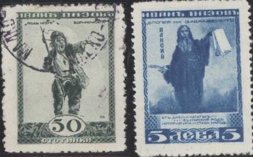
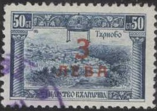
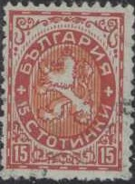
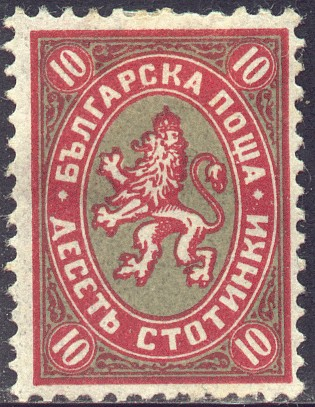

(These stamps were issued in 1921, though the inscription reads '1915-1916')
Return To Catalogue - Bulgaria
Note: on my website many of the
pictures can not be seen! They are of course present in the
catalogue;
contact me if you want to purchase it.

30 s red 50 s grey 1 L brown (portrait of poet in 1850 and 1920 in two circles) 2 L brown (portrait of poet in 1920 in circle) 3 L black 5 L blue
(These stamps were issued in 1921, though the inscription reads
'1915-1916')
10 s red (map of united Bulgaria, with king in center) 10 s red (king with lion) 10 s red (mountains) 10 s lilac (bridge in Skopje) 20 s blue (guard at lake)
10 s grey (Sofia) 20 s green (statue of Alexander II) 25 c blue (Boris) 50 c orange (Tirnowa, design identical to 3 s of 1911 issue) 50 c blue (Tirnowa) 75 s lilac (Shipka pass) 75 s blue (Shipka pass) 1 L red (Boris) 1 L blue (Boris) 2 L brown (harvesting woman) 3 L lilac (ruine, design identical to 1 s 1911 issue) 5 L blue (monastry of Rilo) 10 L brown (Boris) Surcharged

3 L (red) on 50 s blue (1924) 6 L (blue) on 1 L red (1924)
J.M.Bourchier with Bulgarian costume
10 s orange 20 s orange Portrait of J.M.Bourchier
30 s blue 50 s blue 1 L violet Monastry of Rilo: Bourchiers' resting place
1 1/2 L green 2 L green 3 L blue 5 L brown Overprinted 'HaboDHeHNTO 1939' '2 + 1' on 1 1/2 L green '4 + 2' on 2 L green '7 + 4' on 3 L blue '14 + 7' on 5 L brown
Lion in ellipse

10 s red and blue 15 s red and brown 30 s black and brown Lion head
50 s brown on green Church
2 L green and yellow Harvest
4 L red and yellow Overprinted with aeroplane (airmail, 1926)
4 L red and yellow
50 s black
The two types of the 1 L grey
1 L grey (with chain) 1 L grey (without chain) 1 L green 2 L brown Overprinted with aeroplane (airmail, 1928) 2 L brown (overprint in red)
1 L green 2 L violet 4 L red
6 L blue and green 10 L brown and orange Overprinted with aeroplane (airmail)
1 on 6 L blue and green (vertical overprint in red, 1926) 10 L brown and orange (1928, horizontal overprint in green)
 
(1927 and 1930 issue, the word 'STOTINKI' is written differently)
10 s red and grey 15 s black and orange (1930) 30 s blue and yellow 50 s black and red
1 L green 2 L brown
10 s black (St.Clement) 15 s lilac (K.Miladinov) 30 s red (G.Radowski) 50 s green (monastry of Tirnowo) 1 L brown (Palsig) 2 L blue (King Simeon) 3 L green (L.Karaweiov) 4 L olive (W.Lewski) 5 L brown (G.Benkowksi) 6 L blue (Alexander II of Russia)
1 L green (king and princess facing left) 2 L violet (king and princess facing each other) 4 L red (design as 1 L) 6 L blue (design as 2 L)
1 L green 2 L red 4 L red 6 L blue 10 L orane 12 L blue 50 L brown
1 L green 2 L red 6 L blue 12 L red 20 L violet 30 L orange 50 L red
1 L green 2 L red 4 L orange 6 L blue 7 L blue 10 L grey 12 L brown 14 L brown Larger size
20 L lilac and brown Surcharged
'2' (blue) on nonissued 3 L olive
18 l green 24 l red 28 l blue
1 l dark green (man trowing stone) 1 l light green 2 l red (monument, inscription '1934) 2 l orange 3 l brown (soldier, inscription '1934') 3 l yellow 4 l red-brown (soldier and monument) 4 l red 7 l dark blue (design as 3 l) 7 l light blue 14 l lilac (people pointing at rock, inscription '1934) 14 l light brown
1 L blue 2 L lilac
1 l green (football match) 2 l grey (church) 4 l red (4 footballers lining up) 7 l blue (man with horn in front of map) 14 l orange (saluting footballer) 50 l brown (football cup)
1 l green 2 l blue 4 l red 7 l blue 14 l brown 50 l red
1 l light brown (Jan Hunyadi) 2 l lilac 4 l orange (memorial) 7 l blue (King Wladislaw III) 14 l green (battle scene with horse)
1 l green (memorial statue) 2 l brown (portrait) 4 l red (portraits in two circles) 7 l blue (group of soldiers) 14 l orange (birth house of Dimitri)
1936 Lion issue
Value in circle, surrounded by grain ,flowers etc. 10 s orange 15 s green Lion 30 s light brown 30 s red-brown 30 s light blue 50 s violet 50 s red 50 s green
1 l violet (observatory) 2 l blue (woman with grape vine) 7 l blue (island)
1 l green 2 l lilac (design as 1 l) 4 l orange 7 l blue (design as 1 l) 14 l red (design as 4 l)
1 l green 2 l brown 4 l orange
Harvesting 10 s orange 10 s red Sunflower 15 s red 15 s lilac grain with value in circle 30 s brown 30 s red-brown Chickens 50 s black 50 s grey Grapes 1 L light green 1 L dark green Rose 2 L red 2 L brown Fruits(?) 3 L lilac 3 L brown Lady carrying grapes 4 L lilac 4 L brown Rose 7 L violet 7 L blue Tobacco 14 L dark brown 14 L light brown
1 L green 2 L red (design as 1 L) 4 L orange 7 L blue (design as 1 L) 14 L brown
1 L green 2 L red 4 L brown 7 L blue 14 L lilac
1 L green 2 L brown 4 L orange 7 L blue
Stamp of 1941 (ploughing)
Some stamps of Bulgaria were overprinted in 1944 by the Germans for Macedonia, the text reads 'MakeDoHNR' (small sized stamps) or 'MAKEDOHNR' (large sized stamps). All of them have an additional surcharge.
{kind=link}